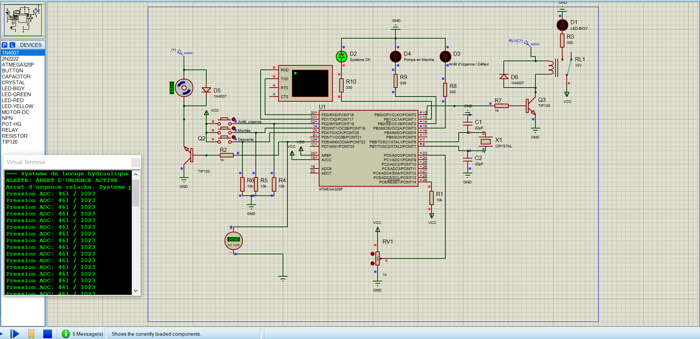
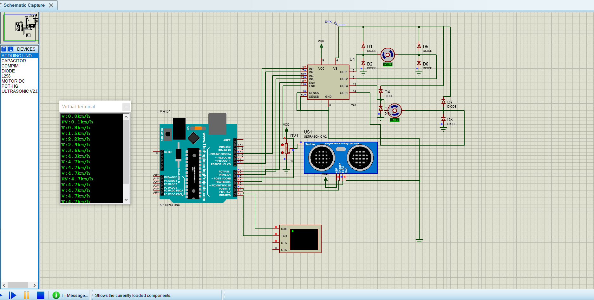
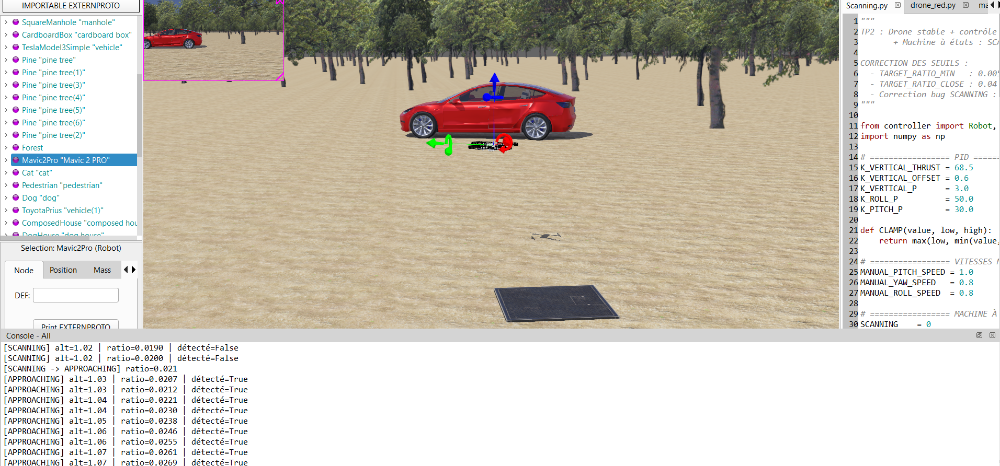
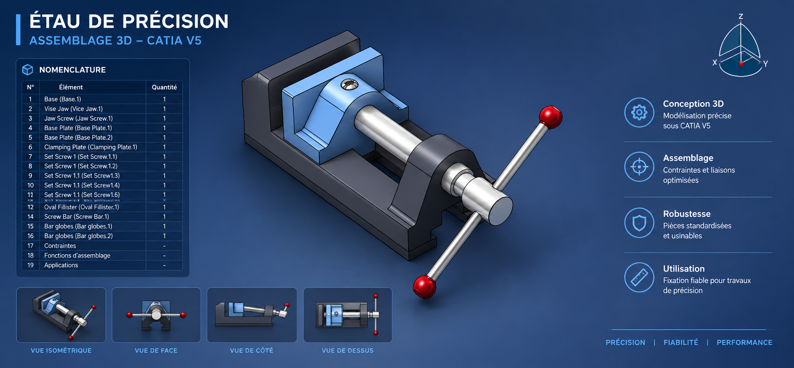
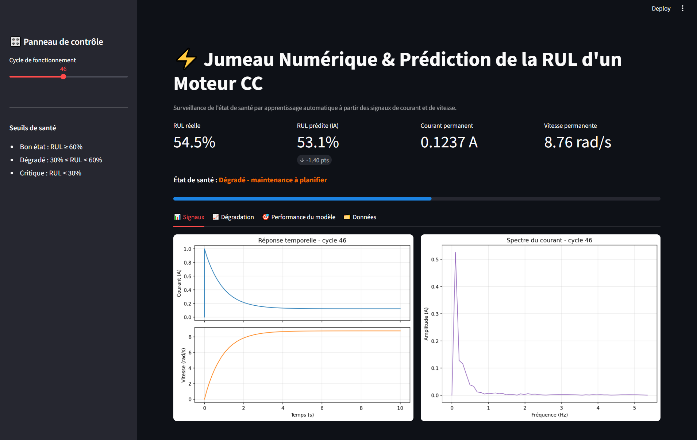

Contrôleur d'ascenseur hydraulique FreeRTOS
Système embarqué sous FreeRTOS (ATmega328P) : surveillance de pression, commande PWM de la pompe, pilotage d'électrovanne et arrêt d'urgence prioritaire. Simulation sous Proteus.
Dépôt GitHubPortfolio · Génie Mécatronique
Élève-ingénieur en génie mécatronique, spécialisé en systèmes embarqués temps réel, contrôle-commande, robotique et maintenance prédictive (IA / jumeau numérique).

Un profil à la croisée de la mécanique, de l'électronique, de l'informatique embarquée et de l'IA.
Étudiant à l'École Nationale des Sciences Appliquées de Fès (ENSA), je conçois et simule des systèmes mécatroniques complets : de la conception mécanique 3D à la programmation temps réel sur microcontrôleur, en passant par la régulation et l'intelligence artificielle.
Mes projets couvrent l'ordonnancement FreeRTOS (interruptions différées, inversion de priorité, mutex, files de messages), l'asservissement PID, la simulation robotique et la prédiction de durée de vie restante (RUL) par Deep Learning.
Je suis à la recherche d'un stage PFE ou d'une collaboration sur des projets d'automatique, d'embarqué ou de maintenance prédictive.
Les outils et technologies que j'utilise dans mes projets.
Une sélection de projets en systèmes embarqués, robotique, CAO et intelligence artificielle.

Système embarqué sous FreeRTOS (ATmega328P) : surveillance de pression, commande PWM de la pompe, pilotage d'électrovanne et arrêt d'urgence prioritaire. Simulation sous Proteus.
Dépôt GitHub
Architecture multitâche FreeRTOS pour le contrôle Bluetooth d'un fauteuil roulant : traitement sécurisé des capteurs de proximité, gestion d'urgence et pilotage des moteurs DC.
Dépôt GitHub
Simulation 3D d'un quadricoptère sous Webots : stabilisation d'attitude par PID, détection visuelle d'un objet rouge et navigation autonome par machine à états.
Dépôt GitHub
Modélisation 3D, assemblage sous contraintes et étude cinématique (DMU Kinematics) d'un étau d'établi sous CATIA V5.
Dépôt GitHub
Jumeau numérique physique d'un moteur CC sous Simulink, couplé à un réseau PyTorch (MLP) pour estimer la durée de vie restante (RUL), avec tableau de bord Streamlit interactif.
Dépôt GitHubPrédiction de la durée de vie restante (RUL) de moteurs turbofan à partir de données capteurs (NASA C-MAPSS) avec Random Forest, MAE de 13,45 cycles.
Dépôt GitHubTraitement différé des interruptions avec sémaphore binaire, simulé sous Proteus VSM.
CodeValidation expérimentale de l'héritage de priorité pour résoudre l'inversion de priorité.
CodePilote UART thread-safe protégé par mutex pour éviter les conflits d'accès concurrents.
CodeGestion d'événements bare-metal avec Makefile personnalisé et simulation Proteus.
CodeIntéressé par mon profil pour un PFE ou une collaboration ? N'hésitez pas à me contacter !